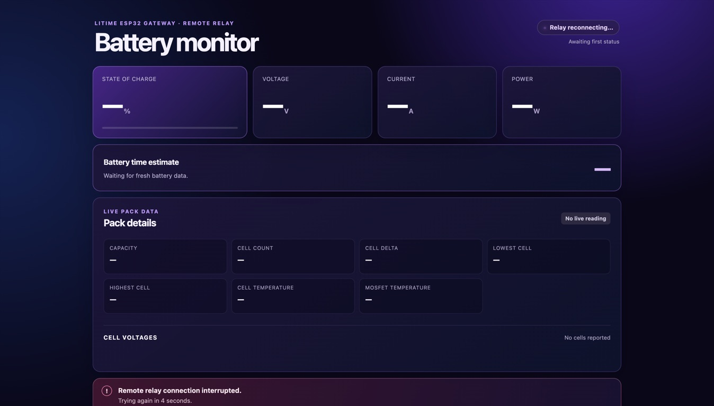
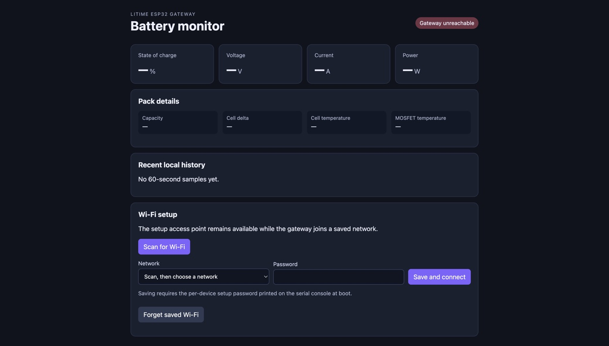

Flash the ESP32
Install Arduino CLI, plug in the board, run the included scripts, and save the setup password printed on first boot.
Open-source battery monitor
Flash an ESP32, connect it to a Bluetooth LiTime battery, and get a read-only local dashboard. Add the optional Cloudflare Worker to check it remotely without opening a router port.

Direct path
The guide is written for someone who has never flashed an ESP32 or deployed a Worker. It starts at downloading the repo and ends at checking the remote dashboard.
Install Arduino CLI, plug in the board, run the included scripts, and save the setup password printed on first boot.
Use the ESP32 access point to scan for your home Wi-Fi, save it, and confirm local battery telemetry.
Deploy the included Cloudflare Worker, add one device token, and let the ESP32 connect outward over WebSocket.
Local first
You do not need a finished network setup to begin. The gateway starts a unique Wi-Fi access point, serves the local dashboard, and keeps that AP available after it joins your normal network.
Jump to Wi-Fi setup
Why this exists
RVs, vans, boats, sheds, and off-grid boxes often need a quick answer: is the battery charging, discharging, balanced, or disconnected? This project keeps that answer visible without giving the internet any control over the battery.
It exposes status, cell voltages, temperatures, current, state of charge, and runtime estimates. It does not expose charge or discharge controls.
The optional remote dashboard uses an outbound ESP32 connection to Cloudflare, so normal home, marina, campground, and Starlink networks can work.
The repo includes firmware, the local web UI, the Cloudflare Worker, and a beginner setup guide with screenshots.
Good fit
Plain answers
No. It is a monitoring project. Keep real protection, fusing, chargers, and disconnects in the electrical system.
No. The remote dashboard uses an outbound connection from the ESP32 to Cloudflare.
That is the point. The setup guide starts with tool installation and includes screenshots of the pages you should see.
The firmware targets Bluetooth LiTime batteries using the LiTime BLE read path implemented in the repo.
Start here